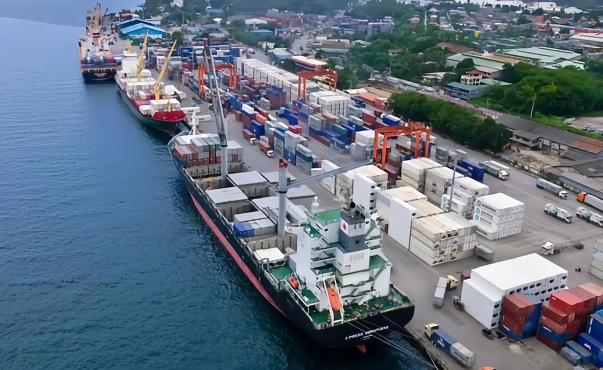
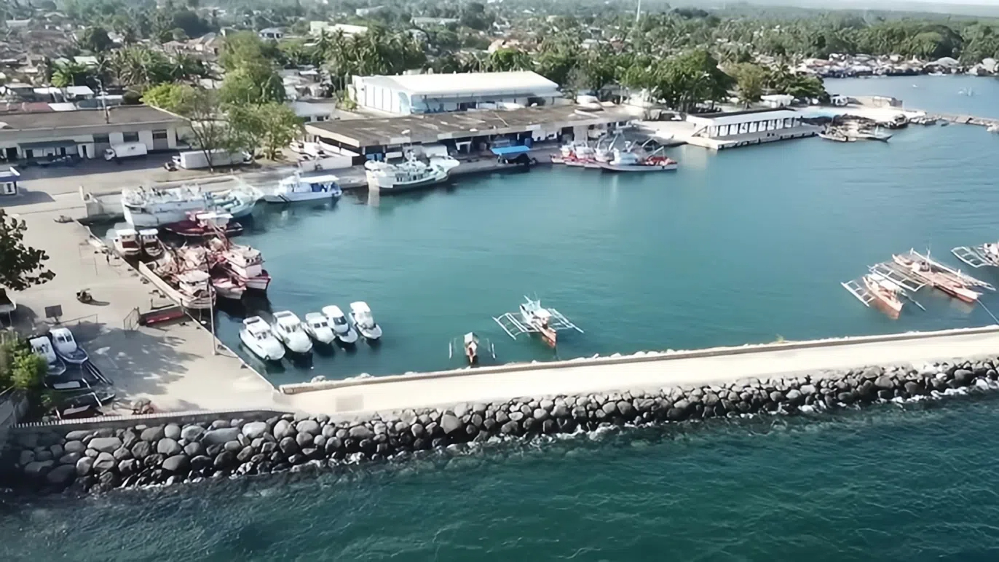
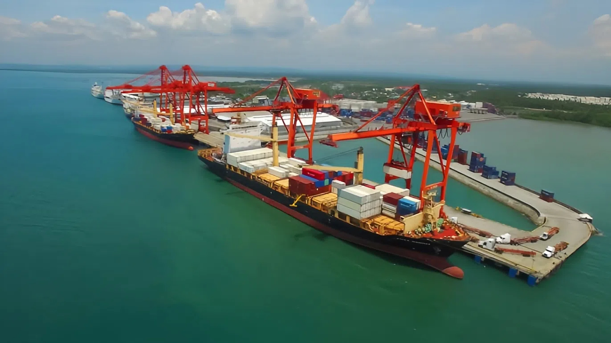
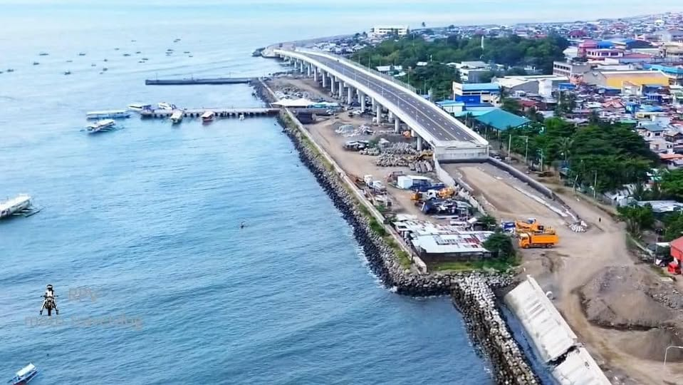
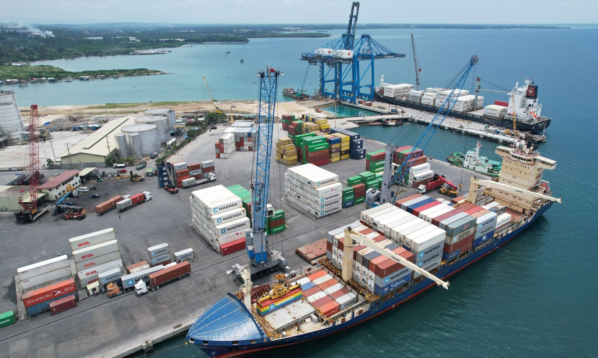
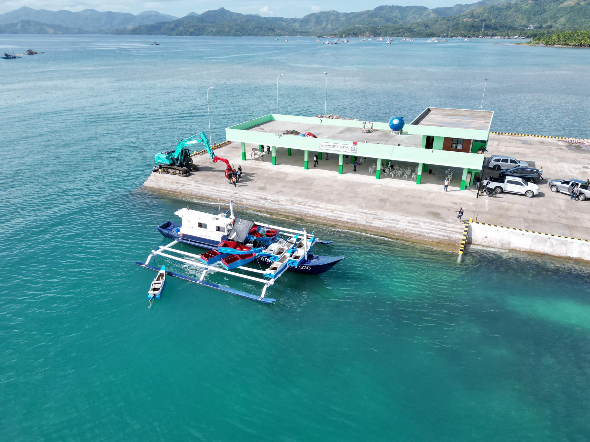
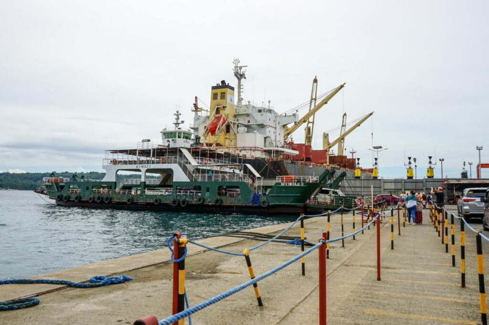
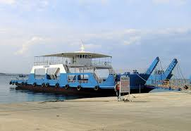
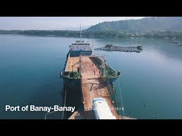
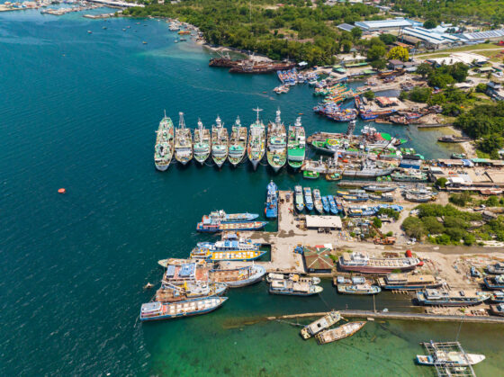

DAVAO REGION PORTS
Comprehensive guide to Port Management Office of Davao (PMO DVO) ports, terminals, and maritime infrastructure
BASEPORT

Port #1
SASA WHARF
Baseport - Davao City
Davao City
Non-RORO Terminal
Commercial Port
Deep Water Access

Port #2
DALIAO (ANCHORAGE)
Baseport - Davao City
Davao City
Anchorage Point
Cargo Operations
Safe Anchorage

Port #4
MACO (ANCHORAGE)
Baseport - Davao de Oro
Davao de Oro
Anchorage Point
Mining Exports
Cargo Loading

Port #5
PANABO (ANCHORAGE)
Baseport - Davao del Norte
Davao del Norte
Anchorage Point
Agricultural Exports
Banana Loading

Port #6
STA. ANA (ANCHORAGE)
Baseport - Davao City
Davao City
Anchorage Point
Commercial Vessels
Safe Harbor

Port #7
TIBUNGCO (ANCHORAGE)
Baseport - Davao City
Davao City
Anchorage Point
Fishing Vessels
Protected Area
TMO - MATI

Port #8
OTP MATI WHARF
TMO - Mati City
Mati, Davao Oriental
Terminal Operations
Passenger & Cargo
Provincial Port
TMO - BABAK/SAMAL

Port #9
OTP BABAK
TMO - Island Garden City of Samal
Babak, Samal Island
Inter-Island Ferry
Tourism Gateway
Island Port

Port #10
OTP MAE WESS
TMO - Island Garden City of Samal
Samal Island
Passenger Terminal
Tourist Routes
Ferry Services
OTHER GOVERNMENT PORTS

Port #11
BANAY-BANAY
Government Port - Davao Oriental
Banay-Banay, Davao Oriental
Municipal Port
Local Transport
Community Access

Port #12
DAVAO FISHPORT
Government Port - Davao City
Davao City
Fishing Port
Fishing Fleet Base
Seafood Hub